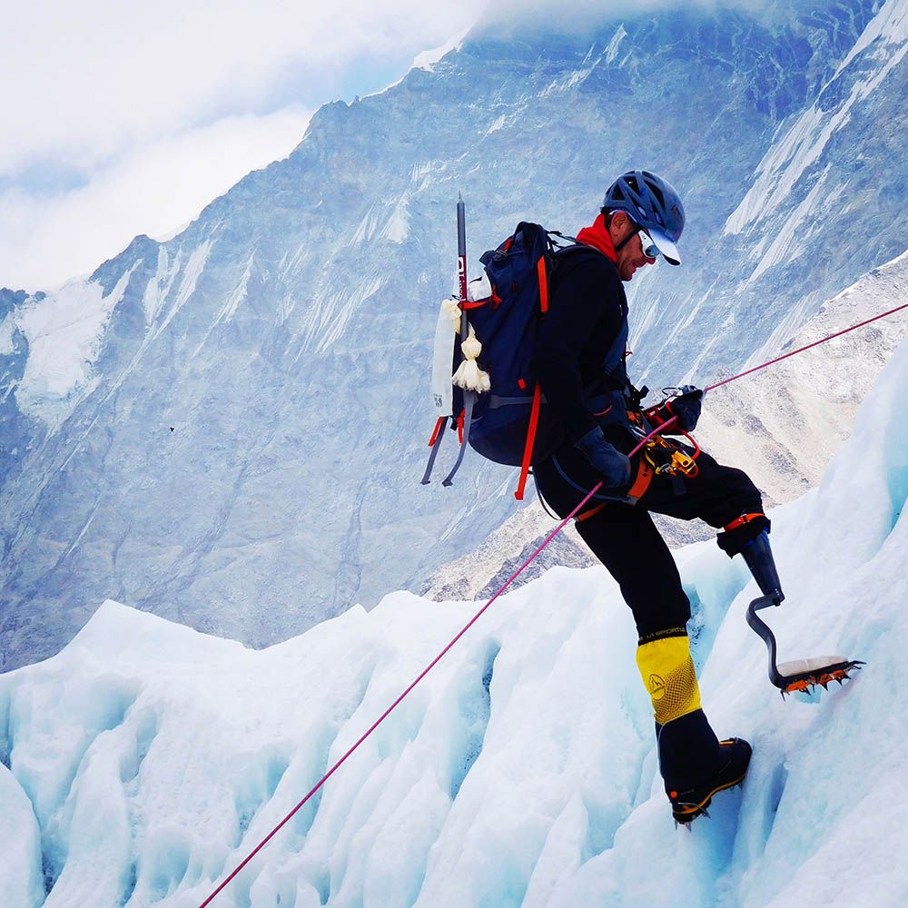

- Duración: 3 jornadas de entrenamiento
- Nivel técnico: Inicial, sin experiencia previa requerida
- Accesibilidad: Adaptado para prótesis y baja visión / ceguera, con guía 1:1
Expediciones · Patagonia · Montaña Adaptada
No entrenamos para convivir con los límites. Entrenamos para descubrir dónde terminan realmente. Expediciones de alta montaña para personas con prótesis y personas ciegas que buscan algo más que una experiencia: buscan una cumbre.
No venimos a inspirar
No venimos a inspirar.
Venimos a escalar.
La montaña no premia las excusas.
No le importa quién eres, de dónde vienes ni qué te falta.
Solo responde a una pregunta:
¿Estás dispuesto a seguir avanzando cuando el camino se vuelve difícil?
Este proyecto nació para quienes entienden que una prótesis no define una capacidad y que la ausencia de visión no impide encontrar el rumbo.
Aquí no hablamos de imposibilidades.
Hablamos de preparación, técnica, disciplina y coraje.
Porque la verdadera limitación nunca estuvo en el cuerpo.
Siempre estuvo en la decisión de intentarlo.
Entrenamos a:
Atrévete a desafiar todos los límites
Demuestra que la verdadera fuerza surge cuando la adversidad se convierte en impulso.
Personas con discapacidad motriz:
Sin piernas, sin brazos, con prótesis o apoyos técnicos.
Configuración avanzada de crampones en titanio de grado militar. Testeado a -20°C.
Mantené el foco o el mouse sobre esta tarjeta para ver un dato técnico adicional.Personas con discapacidad visual:
Ciegos/baja visión, acompañados de guías especializados.
Guiado por comandos de audio 3D de alta precisión y cuerdas de dirección háptica.
Mantené el foco o el mouse sobre esta tarjeta para ver un dato técnico adicional.
El camino antes de la montaña
La cumbre empieza
mucho antes de la montaña.
Nadie llega a una expedición por azar. Cada participante atraviesa un proceso diseñado para desarrollar confianza, capacidad técnica y autonomía.
-
Analizamos tu condición física, experiencia y objetivos.
-
Fortalecimiento, movilidad y resistencia.
-
Progresión en roca, nieve y terrenos complejos.
-
Prácticas en condiciones controladas.
-
La prueba final. La montaña. La decisión. La cumbre.
No improvisamos aventuras.
Construimos montañistas.
Prueba social
Historias escritas por quienes llegaron.
“Cuando perdí la pierna pensé que algunas experiencias quedarían atrás. Hoy sé que solo estaba empezando una nueva versión de mí.”
Preparación para la expedición
Las grandes cumbres exigen grandes procesos.
- Duración: 8 semanas de preparación + expedición
- Nivel técnico: Intermedio a avanzado
- Accesibilidad: Protocolos específicos por tipo de prótesis y guiado verbal de precisión
- Duración: 12 semanas de preparación + expedición
- Nivel técnico: Avanzado, expedición previa recomendada
- Accesibilidad: Equipo de rescate y guías certificados en deporte adaptado
La confianza no aparece en la cumbre.
Se construye durante el entrenamiento.
Catálogo de rutas
Tu próxima cumbre ya está ahí arriba.
Patagonia ofrece algunos de los desafíos más extraordinarios del planeta. Nosotros los convertimos en objetivos alcanzables mediante preparación, tecnología y acompañamiento especializado.
-
Cerro Destino
Adaptación requerida: Media
Cupos de Guías 1:1 Disponibles
-
Cumbre Austral
Adaptación requerida: Alta
Cupos de Guías 1:1 Disponibles
-
Ruta Glaciar
Adaptación requerida: Avanzada
Cupos de Guías 1:1 Disponibles
-
Travesía Andina
Adaptación requerida: Experto
Cupos de Guías 1:1 Disponibles
Las montañas no se acercan a las personas.
Las personas se acercan a las montañas.
El equipo detrás de la cuerda
Experiencia cuando más importa.
Detrás de cada expedición hay un equipo formado por especialistas en alta montaña, deporte adaptado y rescate. Profesionales que entienden una verdad simple: la seguridad no se negocia.
Nuestro trabajo es que puedas concentrarte en avanzar. Mientras nosotros nos ocupamos de todo lo demás.
- Guías de Alta Montaña
- Rescate en terrenos complejos
- Escalada Adaptada
- Primeros Auxilios en Áreas Remotas
No se encontraron fotos en la carpeta assets todavía.
Campamento Base
La montaña ya tomó su decisión.
Sigue ahí.
La pregunta es otra: ¿qué vas a hacer tú?
Da el primer paso. Conversemos sobre tu experiencia, tus objetivos y la cumbre que quieres alcanzar. Nosotros ponemos el mapa. Tú decides avanzar.